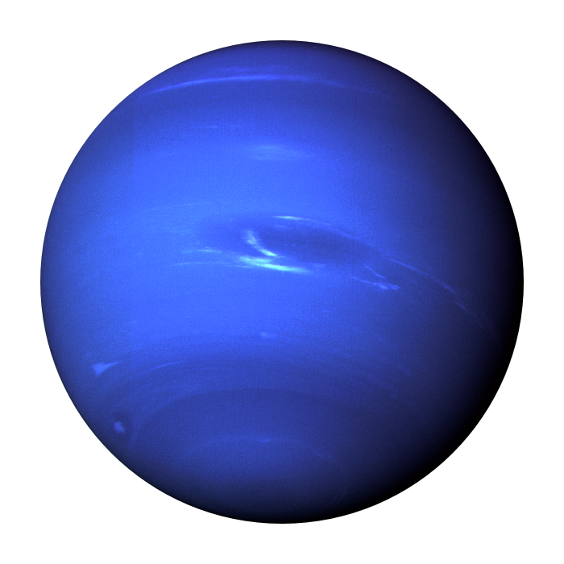

Neptun
Neptune is the farthest planet from our Sun, mesmerizing with its deep ultramarine color due to the presence of methane in its atmosphere. This ice giant has the fastest supersonic winds in the solar system, blowing at speeds of over two thousand kilometers per hour. In the depths of Neptune, the pressure and temperature are so extreme that carbon there turns into real diamonds, which constantly fall to the planet's core in the form of precious rains.